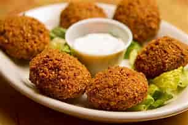
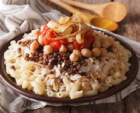

Food in Egypt
Theres Some of my Favourite Egyptian Food
Kushari
Carb Overload Coming Right At You! Come Lunch Time In Cairo You Will See a Stack Of Locals Lined Up At every Kushari Shop Around ,Waiting for a hearty portion Of One Of Egypts Favourite Street foods. this filling meal is made up Of Rice , Macaroni And Lentils,topped width Tomato Sauce,garilc vinegar And gamished With chickpeas And fried online . its A prefect Meal Thats Sustainable nutirent -packed and cheap .Excatly Were after!
ful we tameya
tameya and ful mudamms ,wich are essentially fava beans and falafel are the orginal Egyptian fast-food. they are a staple of the Egyptaion diet ,manaily because they are filling and use ingredients that are easily accessiable inthe countery the fulis made of fava beans that are coocked for hours in apot called a qedra . the ta-meya ,wich is an egyptian falafel are the original Egyptian fast-food they are stable of egyptian diet,mainly because they are filling and use ingredients that are easily accessiable in the countery. the ful is made of fava beans
